ZHANG, yanhao
Ph.D., Algorithm Expert
|
||
Biography (in Chinese)
I'm currently a member of Cognitive and Interactive Vision & Digital Intelligence E-commerce team, in Machine Intelligence Technology Lab, Alibaba DAMO Academy. My adviser is Prof. Rong Jin. I finished my PhD at Harbin Institute of Technology, with Professor Qingming Huang.
My research interests include multimedia retrieval, social media analysis, and computer vision. I used to dive into several industrial projects i.e. "Pailitao", "TaobaoLive", etc. Currently, I start to work on video content structuring, multi-model learning.
News
Publications
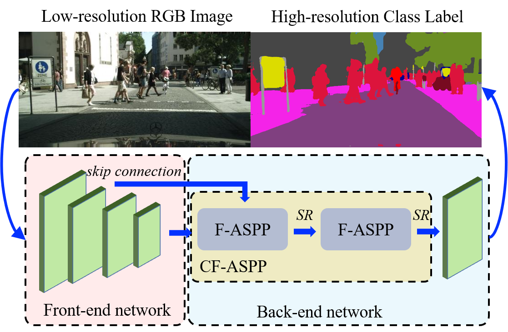 |
LLMI3D: MLLM-based 3D Perception from a Single 2D Image Fan Yang, Sicheng Zhao, Yanhao Zhang, Hui Chen, Haonan Lu, Jungong Han, Guiguang Ding in IEEE Transactions on Multimedia, 2026 |
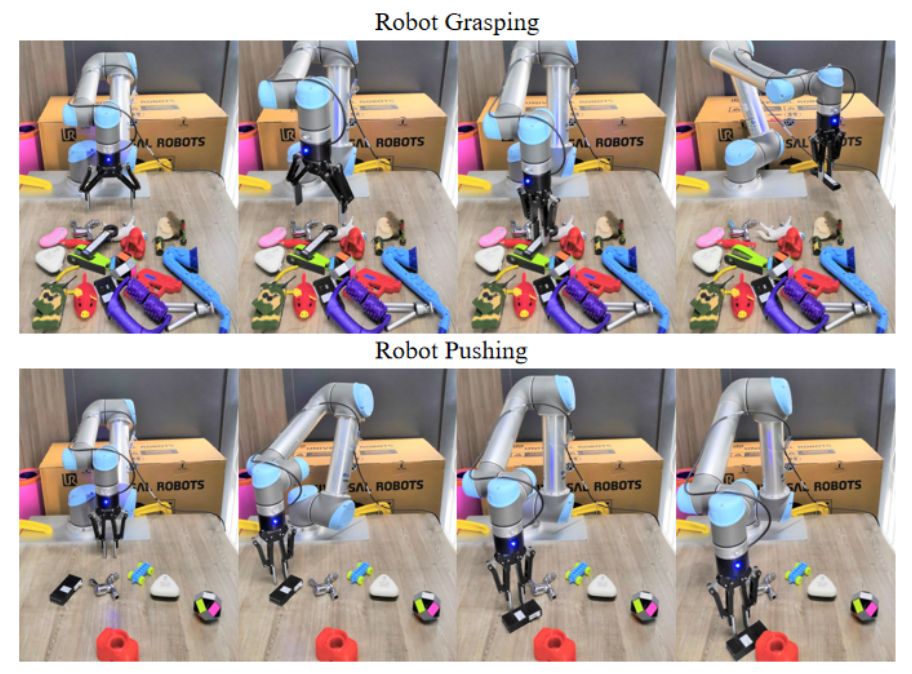 |
AndesVL Technical Report: An Efficient Mobile-side Multimodal Large Language Model Zhiwei Jin, Xiaohui Song, Nan Wang, Yafei Liu, Chao Li, Xin Li, Ruichen Wang, Zhihao Li, Qi Qi, Long Cheng, Dongze Hao, Quanlong Zheng, Yanhao Zhang, Haobo Ji, Jian Ma, Zhitong Zheng, Zhenyi Lin, Haolin Deng, Xin Zou, Xiaojie Yin, Ruilin Wang, Liankai Cai, Haijing Liu, Yuqing Qiu, Ke Chen, Zixian Li, Chi Xie, Huafei Li, Chenxing Li, Chuangchuang Wang, Kai Tang, Zhiguang Zhu, Kai Tang, Wenmei Gao, Rui Wang, Jun Wu, Chao Liu, Qin Xie, Chen Chen, Haonan Lu in arXiv preprint arXiv:2510.11496, 2025 |
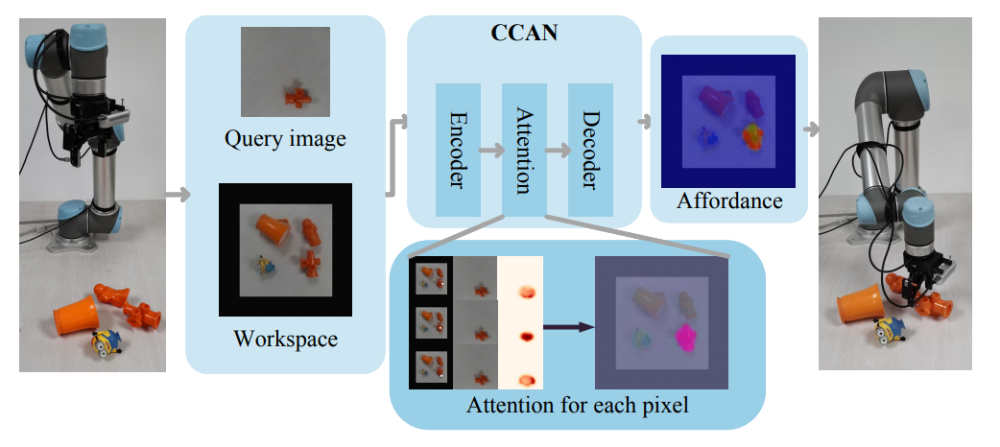 |
Owlcap: Harmonizing motion-detail for video captioning via hmd-270k and caption set equivalence reward Chunlin Zhong, Qiuxia Hou, Zhangjun Zhou, Shuang Hao, Haonan Lu, Yanhao Zhang, He Tang, Xiang Bai in arXiv preprint arXiv:2508.18634, 2025 |
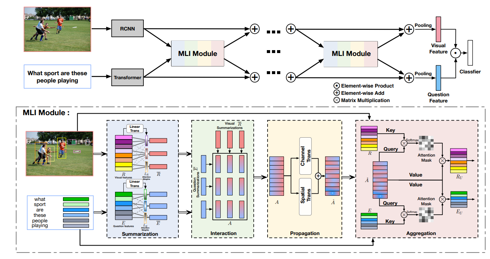 |
DMTrack: Spatio-Temporal Multimodal Tracking via Dual-Adapter Weihong Li, Shaohua Dong, Haonan Lu, Yanhao Zhang, Heng Fan, Libo Zhang in arXiv preprint arXiv:2508.01592, 2025 |
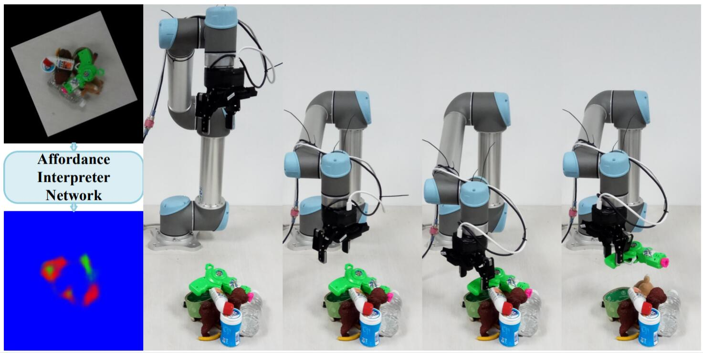 |
Dynamic-I2V: Exploring Image-to-Video Generation Models via Multimodal LLM Peng Liu, Xiaoming Ren, Fengkai Liu, Qingsong Xie, Quanlong Zheng, Yanhao Zhang, Haonan Lu, Yujiu Yang in arXiv preprint arXiv:2505.19901, 2025 | 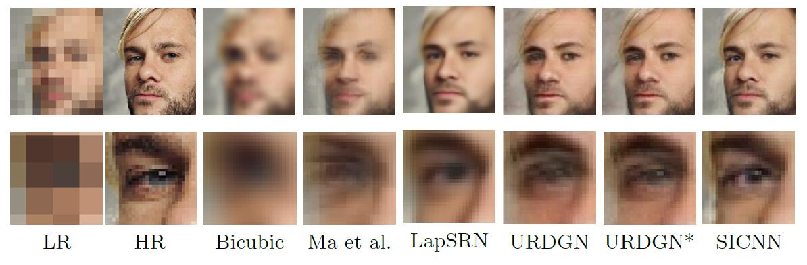 |
H2vu-benchmark: A comprehensive benchmark for hierarchical holistic video understanding Qi Wu, Quanlong Zheng, Yanhao Zhang, Junlin Xie, Jinguo Luo, Kuo Wang, Peng Liu, Qingsong Xie, Ru Zhen, Zhenyu Yang, Haonan Lu in arXiv preprint arXiv:2503.24008, 2025 |
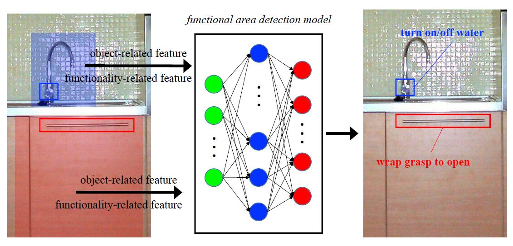 |
Layton: Latent Consistency Tokenizer for 1024-pixel Image Reconstruction and Generation by 256 Tokens Qingsong Xie, Zhao Zhang, Zhe Huang, Yanhao Zhang, Haonan Lu, Zhenyu Yang in arXiv preprint arXiv:2503.08377, 2025 |
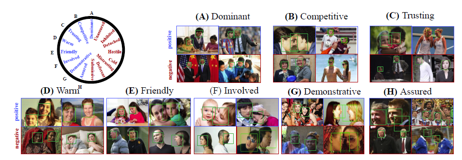 |
Improved visual-spatial reasoning via r1-zero-like training Zhenyi Liao, Qingsong Xie, Yanhao Zhang, Zijian Kong, Haonan Lu, Zhenyu Yang, Zhijie Deng in arXiv preprint arXiv:2504.00883, 2025 |
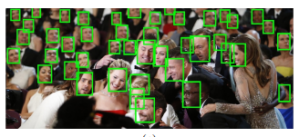 |
InstructHOI: Context-Aware Instruction for Multi-Modal Reasoning in Human-Object Interaction Detection Jinguo Luo, Weihong Ren, Quanlong Zheng, Yanhao Zhang, Zhenlong Yuan, Zhiyong Wang, Haonan Lu, Honghai Liu in NeurIPS, 2025 |
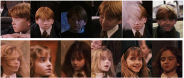 |
Free-MoRef: Instantly Multiplexing Context Perception Capabilities of Video-MLLMs within Single Inference Kuo Wang, Quanlong Zheng, Junlin Xie, Yanhao Zhang, Jinguo Luo, Haonan Lu, Liang Lin, Fan Zhou, Guanbin Li in Proceedings of the IEEE/CVF International Conference on Computer Vision, 2025 |
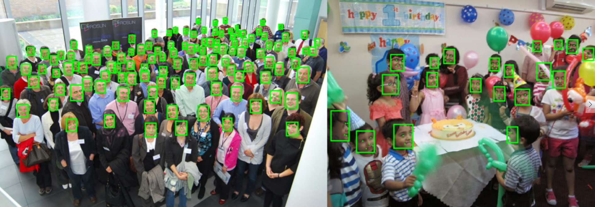 |
Heie: Mllm-based hierarchical explainable aigc image implausibility evaluator Fan Yang, Ru Zhen, Jianing Wang, Yanhao Zhang, Haoxiang Chen, Haonan Lu, Sicheng Zhao, Guiguang Ding in Proceedings of the Computer Vision and Pattern Recognition Conference, 2025 |
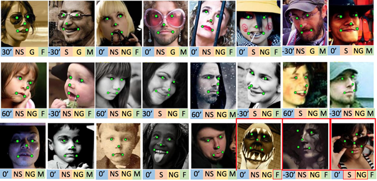 |
Loopanimate: Loopable salient object animation Fanyi Wang, Peng Liu, Haotian Hu, Dan Meng, Jingwen Su, Jinjin Xu, Yanhao Zhang, Xiaoming Ren, Zhiwang Zhang in Proceedings of the 6th ACM International Conference on Multimedia in Asia, 2024 |
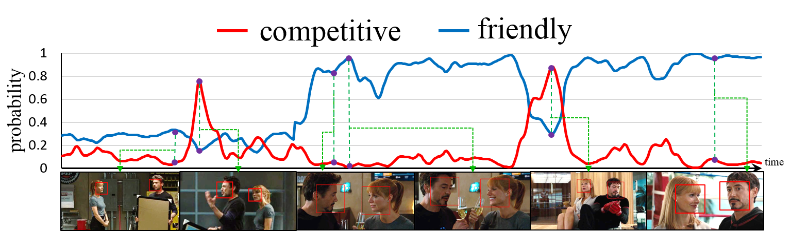 |
Zero-shot high-fidelity and pose-controllable character animation Bingwen Zhu, Fanyi Wang, Tianyi Lu, Peng Liu, Jingwen Su, Jinxiu Liu, Yanhao Zhang, Zuxuan Wu, Guo-Jun Qi, Yu-Gang Jiang in arXiv preprint arXiv:2404.13680, 2024 |
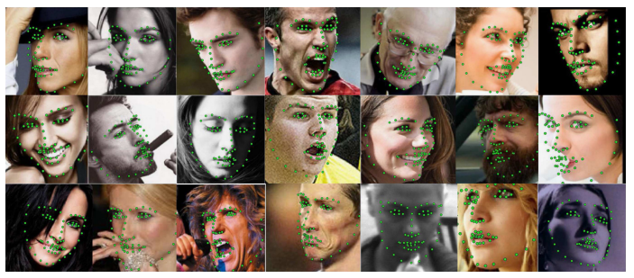 |
Lightweight high-resolution subject matting in the real world Peng Liu, Fanyi Wang, Jingwen Su, Yanhao Zhang, Guo-Jun Qi in ICASSP, 2024 |
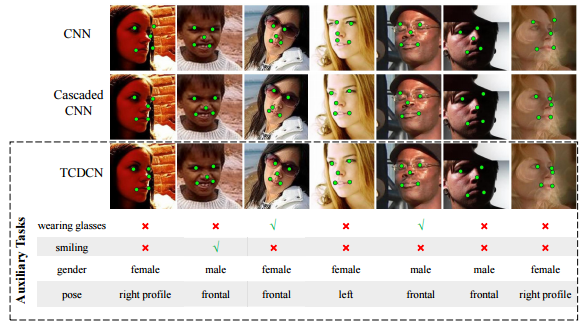 |
Baret: Balanced attention based real image editing driven by target-text inversion Yuming Qiao, Fanyi Wang, Jingwen Su, Yanhao Zhang, Yunjie Yu, Siyu Wu, Guo-Jun Qi in Proceedings of the AAAI Conference on Artificial Intelligence, 2024 |
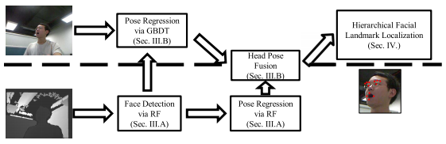 |
Poseanimate: Zero-shot high fidelity pose controllable character animation Bingwen Zhu, Fanyi Wang, Tianyi Lu, Peng Liu, Jingwen Su, Jinxiu Liu, Yanhao Zhang, Zuxuan Wu, Yu-Gang Jiang, Guo-Jun Qi in CoRR, 2024 |
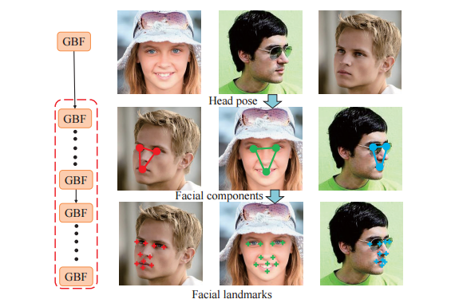 |
Matting Moments: A Unified Data-Driven Matting Engine for Mobile AIGC in Photo Gallery. Yanhao Zhang, Fanyi Wang, Weixuan Sun, Jingwen Su, Peng Liu, Yaqian Li, Xinjie Feng, Zhengxia Zou in IJCAI, 2023 |
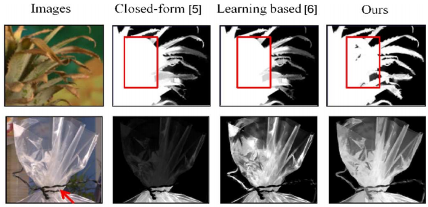 |
GAM: Gradient attention module of optimization for point clouds analysis Haotian Hu, Fanyi Wang, Jingwen Su, Hongtao Zhou, Yaonong Wang, Laifeng Hu, Yanhao Zhang, Zhiwang Zhang in Proceedings of the AAAI Conference on Artificial Intelligence, 2023 |
|
An alternative to wsss? an empirical study of the segment anything model (sam) on weakly-supervised semantic segmentation problems Weixuan Sun, Zheyuan Liu, Yanhao Zhang, Yiran Zhong, Nick Barnes in arXiv preprint arXiv:2305.01586, 2023 |
|
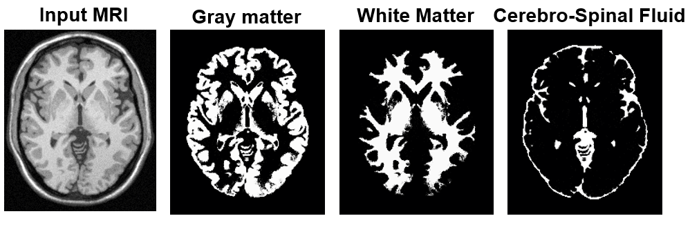 |
Knowledge distillation from single to multi labels: an empirical study Youcai Zhang, Yuzhuo Qin, Hengwei Liu, Yanhao Zhang, Yaqian Li, Xiaodong Gu in arXiv preprint arXiv:2303.08360, 2023 |
 |
Visual search at alibaba Yanhao Zhang, Pan Pan, Yun Zheng, Kang Zhao, Xiaofeng Ren, Rong Jin in Proceedings of the 24th ACM SIGKDD International Conference on Knowledge Discovery and Data Mining (KDD), 2018 |
 |
Dancelets mining for video recommendation based on dance styles Tingting Han, Hongxun Yao, Chenliang Xu, Xiaoshuai Sun, Yanhao Zhang, Jason J. Corso in IEEE Transactions on Multimedia, 2016 |
 |
Exploring coherent motion patterns via structured trajectory learning for crowd mood modeling Yanhao Zhang, Lei Qin, Rongrong Ji, Sicheng Zhao, Qingming Huang, Jiebo Luo in IEEE Transactions on Circuits and Systems for Video Technology, 2016 |
 |
Strategy for dynamic 3D depth data matching towards robust action retrieval Sicheng Zhao, Lujun Chen, Hongxun Yao, Yanhao Zhang, Xiaoshuai Sun in Neurocomputing, 2015 |
Journal/Conference Reviewer
Honors & Awards
Research Experience
| April, 2019 – Present | Alibaba DAMO Academy | Algorithm Expert. Short video recommendation, deep embedding learning, user behavior mining |
| Sep, 2012 – April 2017 | Harbin Institute of Technology | Ph.D Student. Supervisor: Prof. Qingming Huang. Crowd behavior analysis and mining |
| Nov, 2011 – Jun, 2012 | Chinese Academy of Sciences | Research Assistant. Abnormal detection, crowd behavior recognition |
| Sep, 2013 – Sep, 2014 | Brown University | Visiting Student. Recognition of crowd and complex visual scenes |
| Sep, 2015 – May, 2016 | Microsoft Research Asia | Intern Student. Similar image service based on deep transfer networks for Microsoft XiaoIce |